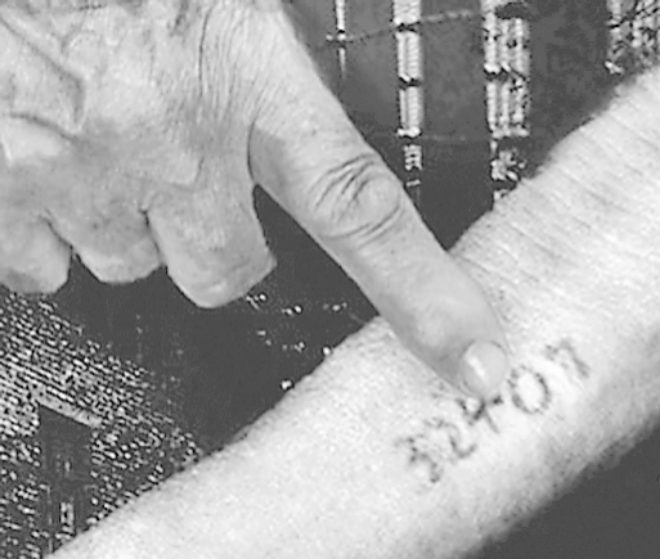
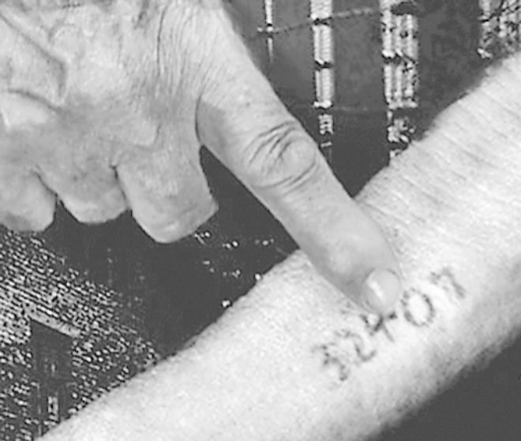

AUTOR
Heather Morris nacida en Te Awamutu, Nueva Zelanda, se mudó en 1971 a Melbourne y se casó con su esposo Steve Morris en 1973. Regresó a Nueva Zelanda en 1975 con su familia, comenzó a estudiar en la Universidad de Monash y se especializó en Ciencias Políticas. Trabajó en el Departamento de Trabajo Social en el Centro Médico Monash en Melbourne hasta 2017. Mientras siguió su pasión por la narración de historias formándose en escritura de guiones asistiendo a seminarios y talleres. En 2003 conoció a Lale Sokolov, un anciano que le contó su historia en el Holocausto y que Morris convirtió en un guion cinematográfico y después en su primera novela El tatuador de Auschwitz De esta misma historia surgió su siguiente obra, El viaje de Cilka.
Heather Morris

 
